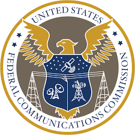
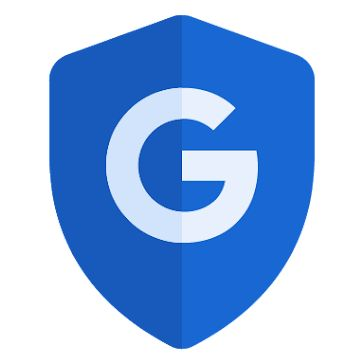

Keeping Your Digital World Secure
Just like in disc golf, where understanding the wind and terrain helps you throw your best shot, staying informed about online security helps you navigate the internet safely. The internet is an essential part of our lives, but it’s important to be aware of potential security risks. Websites can access various details about your device and browser, which can be used for personalization or, unfortunately, for malicious purposes. This page aims to raise awareness about web security and provide tips for staying safe online—so you can keep your focus on the game, whether it’s on the course or the web!
What We Know About Your Device
Let’s see what your device has to say — here are just a few examples:
Tips for Staying Safe Online
-
Federal Communications Commision

This guide from the FCC offers easy and practical tips for secure web navigation, emphasizing the importance of updating security software, using strong passwords, and securing wireless connections to guard against malware, spyware, and hacking attempts.
- Cybersecurity & Infrastructure Security Agency
-
Google Tools and Tips

This page from one of the most widely used tech companies, Google, provides simple guidance on using its features to protect yourself online, including strengthening your account, safeguarding your information on devices, recognizing scams, and understanding apps on their platforms.